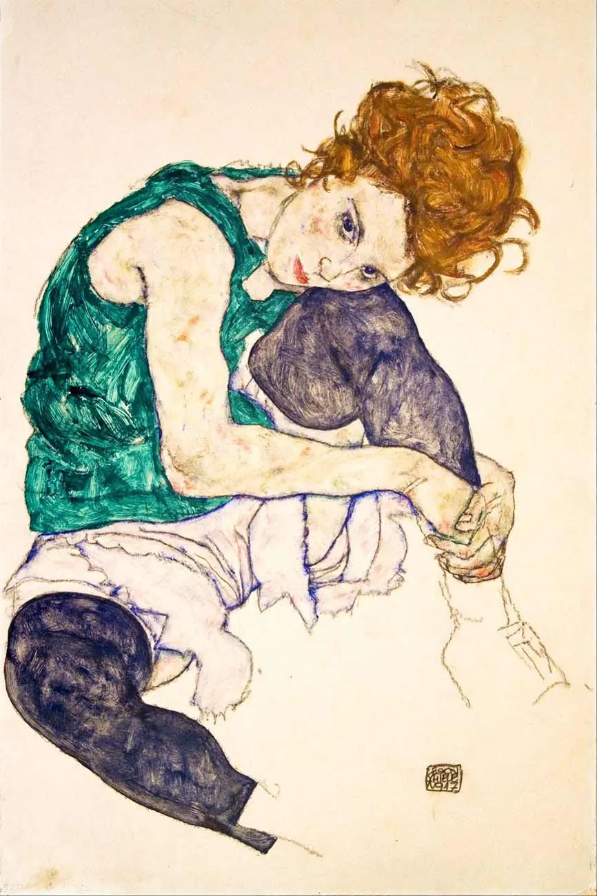

Diario de un Robot · 6 de julio de 2021July 6, 2021
Una película, dos cuentos y un cuadro
Sobre una película de Kobayashi, dos cuentos de Castillo y un cuadro de Schiele.
This essay is only available in Spanish for now.
Sobre Harakiri
Harakiri es una película sobre la práctica tradicional japonesa del suicidio honroso que caracteriza a los samuráis; acto que parece decirnos tanto sobre la cultura del país del sol naciente. A lo largo del film, Masaki Kobayashi (La condición humana, Rebelión samurái, Kwaidan) logra jugar con las expectativas de la audiencia a través de los cambios en el punto de vista. Gracias a un relato que engloba varias historias, obtenemos una orquestación magistral que adrede confunde al espectador y lo hace picar en un anzuelo tras otro, cambiando de opinión como una veleta.
Kobayashi une en su guión la expectativa de un sentenciado a muerte con el relato de una historia por el condenado, creando un efecto Sherezade donde no podemos sino querer continuar con la anécdota enmarcada al mismo tiempo que sentimos la urgencia por averiguar qué va a pasar con Tsugumo Hanshirō, el personaje principal.
Las actuaciones son del dramatismo japonés que puede encontrarse en los clásicos de samuráis. Para quienes estén familiarizados con Kurosawa y las teatrales actuaciones de Mifune, estas no serán más que un refinamiento de las mismas, donde las expresiones son exageradas y evidentes sin perder su autenticidad y candor.
La fotografía, en blanco y negro, es excelente e ilumina la cuidada atmósfera medieval japonesa. Los juegos de luces, los planos que abrevan de la simetría propia de la arquitectura y los movimientos de cámara que acompañan las acciones hacen que la película pueda hacer fluir combates de espadas e inmediatamente después presentar la estoicidad del protagonista con un plano como una fortaleza.
Sin deseos de anticipar una historia que es mejor no conocer de antemano, el guión aborda los conflictos de la pérdida de perspectiva, el prejuicio, los problemas de no conocer la historia ajena y lo conflictivo de los valores tradicionales, en este caso el cuestionado código samurái. La sólida adaptación de la novela Ibun rōnin-ki permite abordar el tema de la afrenta al poder sin caer en obviedades o clichés.
Situada durante el período Edo, bajo el mandato Tokugawa, la reconstrucción de época es impecable. Aunque podría ser relevante estar familiarizado con la importancia de la espada, la colita y la indumentaria samurái, los objetos, como entes trascendentes, parecen emanar su propio significado.
Para cualquier amante de las películas de samuráis, quizás quienes vengan de ver algo de Kurosawa, o incluso para habituales espectadores de wésterns, Harakiri presenta una historia que no envejeció ni un día casi sesenta años después.
Recomendada.
Sobre Abelardo Castillo
Esta semana creí haber terminado los cuentos completos de Abelardo Castillo solo para descubrir que la edición de completos que tenía no recogía el último volumen de Los mundos reales. Abajo pueden leer lo que escribí mientras ignoraba ese dato y elegía mis dos cuentos favoritos de su obra.
Quedé fascinado con los cuentos “Decurión” y “Thar”, ambos de Las maquinarias de la noche. Descubro otra vez que leer las obras completas en orden tiene un valor oculto, que solo se revela cada vez que lo hago y pronto mi cerebro de mono lo olvida.
“Decurión” es un misterio que incluye una pintura, una tía arteriosclerótica, una amistad y un hombre con dos vidas, una de ellas secreta, perdida, robada. No quiero entrar en detalles, un cuento tiene la extensión justa para que una sola frase pueda llamarte hacia él. Castillo hace el resto si lo empezás.
“Thar” da aún más que hablar, es quizás mi cuento favorito del autor (hasta ahora), los elementos que lo componen me delatan: una leyenda salida del Corán que llega hasta un pueblo perdido bonaerense, una cimitarra (espada en medialuna) con Thar inscripto sobre ella: la venganza; un hombre que cuenta una leyenda, otro, escritor, que la escucha. Me parecieron notorios los elementos borgeanos, una cruza excelente del tono de Castillo con las temáticas de su predecesor.
Sobre un cuadro de Egon Schiele
Si pudiese disponer de mi cuerpo ¡qué alivio! Y por disponer me refiero a abandonarlo, destruirlo, volatilizarlo; convertirme en un cuerpo etéreo, un espíritu voyeur, ignorante de la carne y la mundanidad. Mens sana in corpore sano, qué dicen, si todo es decaer.
En ese paupérrimo monólogo interno andaba mientras sentado en mi escritorio hojeaba un libro de mi padre con decenas de pinturas y dibujos del austríaco. Poco entendía entre las caras y los cuerpos: las personas de a una, de cerca, no eran mi fuerte.
En los museos siempre había corrido hacia los paisajes, las marinas, los campos verdes, las ruinas y los combates. La lejanía me dejaba crear historias. ¿Qué haría el pastorcito ahí debajo de ese cielo encandilado? ¿A qué jugarían los niños escondidos entre las ruinas? ¿Estaría pensando en casa aquel soldado del fondo cuya muerte por siempre en el óleo se avecinaba? La emoción de los museos no era un estallido en mí, era la súbita aparición de una historia, un diálogo entre mi imaginación y la pintura. Los cuadros me hablaban más cuando dejaba de mirarlos.
El libro de Schiele no me permitía la distancia, era piel, carne y miradas, todas materias que estaba lejos de conocer. Las emociones en mí no son evidentes, he recurrido a tablas, a preguntarle a amigos, a pegar un círculo de colores que las contenga. Mis emociones las conozco como el catálogo de la pinturería, no se anuncian por su nombre. Me tiemblan el pulso y la voz, escondo el cuello bajo mi mano, los ojos andan fugitivos: ansiedad, temor. Schiele quería dialogar con un sordomudo.
Pasé la hoja para encontrarme con la mujer sentada, su cabeza en llamas, su ropa de bosque, los ojos negros que intuyo azules, el fondo de la noche. No puedo evitar seguir su mirada, sentir que me recorre, me juzga desde la página. Su piel es apenas distinguible del pergamino, sus trazos incompletos la quieren fundir con el sustrato, pero es imposible, resalta como una estampida.
Me agarro las manos, las entrelazo una con la otra, hago sonar las uñas entre sí, acomodo la mandíbula que anda ahora tensa, bajo la mirada solo para confirmar lo que ya sé, tengo las piernas enroscadas a las patas de la silla, como serpientes, como el bastón de Esculapio, un nerviosismo digno de atención médica. Tengo que buscar en el catálogo de qué se trata, ¿será intriga?, ¿curiosidad?, ¿el peso arrollador de la mirada ambivalente?
De chico compartía cama con una pesadilla recurrente. Estaba en algún lugar común, el living, la cocina, mi habitación, un lugar que asumía seguro, que debía serlo, pero mi cuerpo me decía lo contrario. Mi papá me contó una vez que nunca hay que darle de comer a un perro si lo golpeaste, que lo confundís mal, que das mensajes cruzados. En mi sueño de cachorro yo esperaba sentado ahí, como un condenado, una sentencia implícita. El aire se hacía montañoso y se entrecortaba mi respiración, algo que algún demente llamó música trepaba por las paredes, notas atonales, desordenadas, dagas suaves, puñales de arena, caricias de fuego helado. Me despertaba a los gritos, pidiendo que pare o me destruya, cualquiera era mejor.
Vuelvo a la mirada jugadora, dueña de todas las cartas, a la marca crucificadora y el ardor de la carne. No logro entenderla y mi frustración sube. ¿Es acaso una sonrisa lo que se trae entre los labios? La Mona Lisa es más evidente. ¿Es acaso un ceño fruncido, unas frutillas apretadas, listas para sangrar gritos?
Ya dejé el escritorio, la silla y la espalda derecha. Ando por el suelo, la reproducción abierta frente a mí, la madera debajo y yo asomado encima, como un animal de la jungla con esos espejos trampa. Las manos se entrelazan sobre la tibia, las piernas casi cruzadas, la cara sobre la rodilla, la panza cubierta, escondida, protegida. La cara girada promete atención. La mirada fija, sin pestañar. Casi invisible se adivina un balanceo, un caer lento, infinito, como un objeto en el espacio. ¿Soy ella o soy yo?

En cada entrega hay varias horas de escrituras implicadas, pero más importante aún es el trabajo de revisión de Ana y Carmen que siempre sacan lo mejor de mis palabras. En realidad sacan lo peor y queda lo mejor, pero se entiende.
Gracias por leer,
Fidel
Seguir leyendo
- Mismo tema: Libros, cine y juegosSame topic: Libros, cine y juegos¿Y si cada quien tiene su propio Borges?10 de diciembre de 2024 · 6 min
- Mismo tema: Libros, cine y juegosSame topic: Libros, cine y juegosAnecdotario 05: Chiche, redes y novedades25 de enero de 2021 · 6 min
- Mismo tema: Libros, cine y juegosSame topic: Libros, cine y juegosDachau2 de mayo de 2021 · 3 min
Un ensayo por semana, en tu mail.One essay a week, in your inbox.
Escribo ficción y ensayo desde 2020. Si te gustó este, el próximo llega a tu casilla.I've been writing fiction and essays since 2020. If you liked this one, the next lands in your inbox.
Si te sirvió, invitame un cafecito.If this was useful, buy me a coffee.
Versión corregida para el sitio.Revised version for the site. Original en SubstackOriginal on Substack, 6 de julio de 2021July 6, 2021.